Exploring Director-level GTM roles · Seattle, WA
Product marketing leader with a track record of positioning AI products, building go-to-market engines, and enabling sales and customer success teams to win. MBA from Kellogg. Previously at CommerceIQ, Amazon, and Puget Sound Energy.
About
I've spent the last decade at the intersection of product, marketing, and sales in enterprise technology. Most recently, I led product marketing at CommerceIQ, where I positioned an AI-powered product suite for Fortune 500 brands, built the packaging and pricing framework, and created the sales enablement engine from the ground up.
I'm drawn to the messy, cross-functional work: taking a complex product, figuring out what story it needs to tell, and building the go-to-market systems to deliver on that story at scale. Whether that's authoring messaging frameworks for an AI agent platform, designing Good/Better/Best packaging, or arming a sales team with the competitive intelligence and demo content they need to win.
Before CommerceIQ, I managed vendor relationships at Amazon, ran product and program management at Puget Sound Energy, and founded Leeward Ventures, a micro private equity firm.
Education
Focus Areas
Industries
Based In
My Approach
I've learned to think of product marketing as four interconnected roles, not a single job description. The best PMMs move fluidly between all four depending on what the moment demands. Here's how each one shows up in my work.
01
Connecting Customer to Product
Bridging the market and the product team. Bringing customer pain points, competitive intelligence, and outside-in insights into the development cycle.
Goal Ensure the product is relevant to the people it's built for.
02
Directing the Go-To-Market
Defining the who, where, and how. Segmentation, targeting, and positioning the product on the right battlefield to compete and grow.
Goal Align product capabilities with the most strategic market opportunities.
03
Shaping Perception
Crafting the narrative that turns features into benefits and products into solutions. Positioning and messaging that makes the product stand out in a noisy market.
Goal Make the value prop so clear the customer feels "this was made for me."
04
Enabling the Organization
Arming Sales, Marketing, and CS with the tools, training, and confidence to tell the product story. Every touchpoint reinforces the narrative.
Goal Consistent, powerful messaging regardless of which team the customer talks to.
Work
Real work samples, articles, and published pieces.
Portfolio
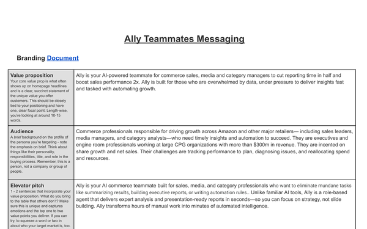
AI agent suite positioning
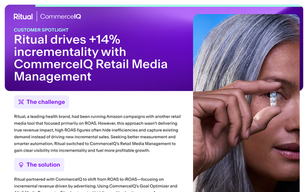
Ritual case study
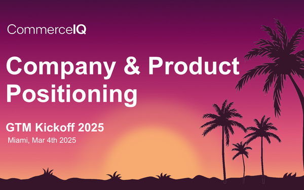
Sales kickoff GTM deck
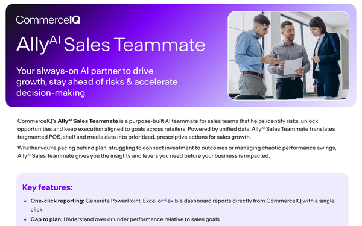
AllyAI one-pager for field
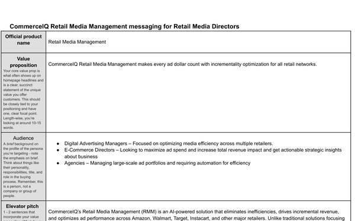
Retail media value pillars
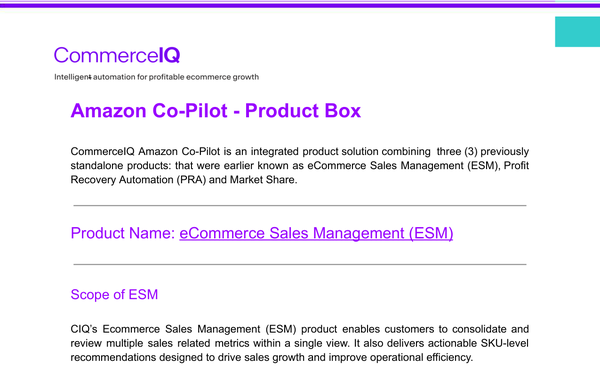
Visual product narrative
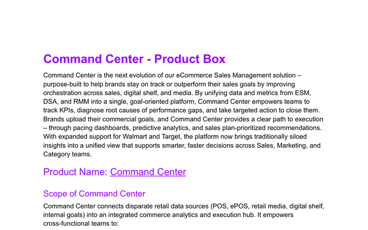
Omni-channel product box
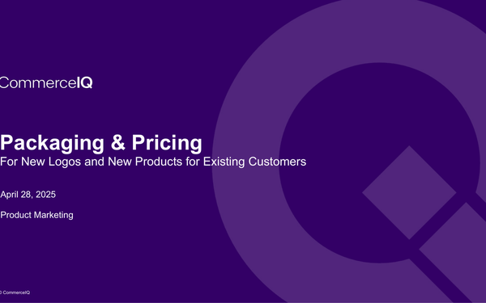
Good/Better/Best tier strategy
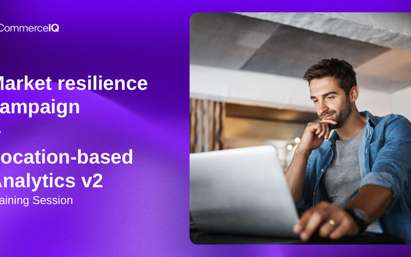
Tariff GTM field enablement
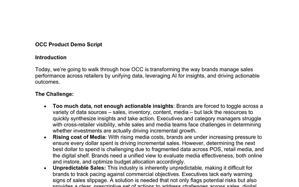
OCC product walkthrough
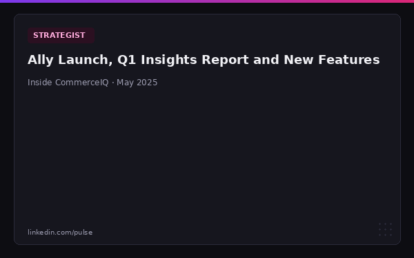
AI product launch newsletter
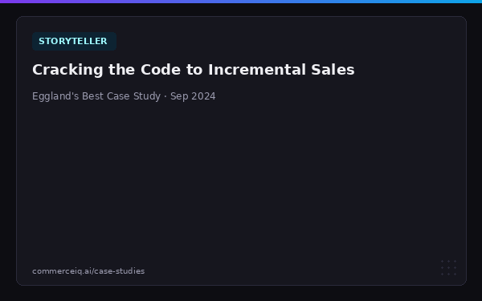
Eggland's Best case study
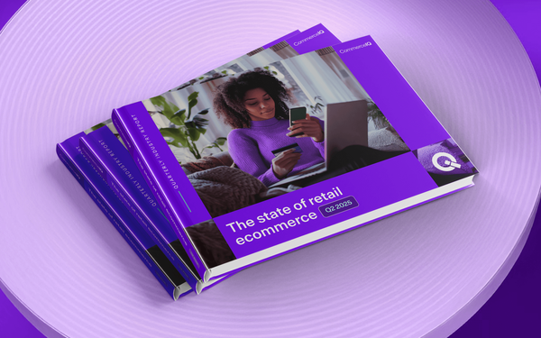
Q2 2025 data analysis
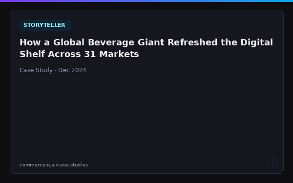
Global beverage brand case study
Writing & Press
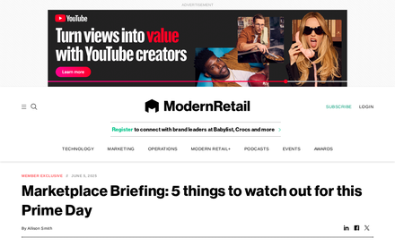
2025
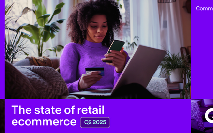
2025
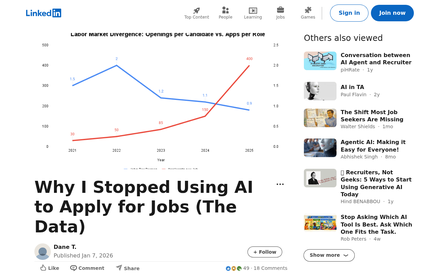
2025
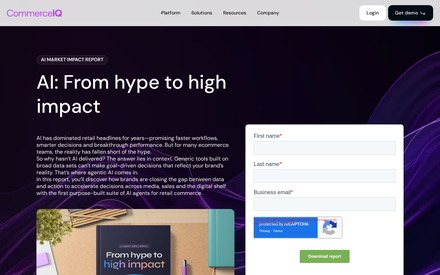
2025
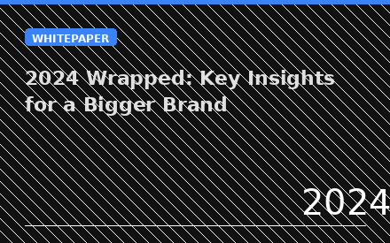
2024
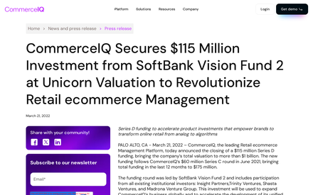
2022
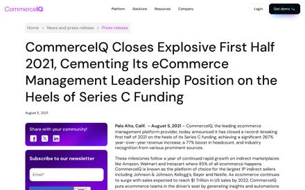
2021
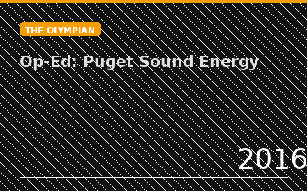
2016
I'm exploring new roles in product marketing, GTM strategy, and AI. 30 minutes is all it takes.
AI Proficiency
I use AI tools daily to ship real work, from full-stack products to research workflows that inform product strategy.
Claude · Google Cloud · Vibe Coding
Built a full product for small e-commerce sellers to optimize their content. Built end-to-end with Claude as the engineering partner. Backend runs on Google Cloud: Cloud Run, Firestore, and Cloud Functions.
Visit siteNotebookLM · Google
Built a process using NotebookLM to analyze Chorus sales calls at scale, extracting field insights to inform the product roadmap. Turned unstructured call data into structured competitive and feature intelligence for product teams.
CommerceIQ · 2019–2025
Spent six years positioning and selling AI products at CommerceIQ, starting with early machine learning models for e-commerce optimization, then evolving through generative and agentic AI solutions for Fortune 500 brands. Was translating ML capabilities into buyer-ready narratives years before GPT made AI a household term.
Experience
A path from vendor management at Amazon to leading product marketing and customer success for an AI-powered commerce platform.
Director, Product Marketing & Customer Success
Seattle, WA
Joined post Series B. Helped grow revenues 50x and headcount 3x in pursuit of the $1B+ Series D. Agentic AI platform for Fortune 500 e-commerce.
Owned product marketing and go-to-market strategy at CommerceIQ, an agentic AI company building machine learning into e-commerce before the category had a name. Founded in 2012 by an ex-Amazon engineer and valued at $1B+ by 2022, CommerceIQ deploys autonomous AI agents that execute pricing, advertising, and supply chain decisions for Fortune 500 brands like Nestlé, Colgate, and Whirlpool.
Authored positioning for 4 products including AllyAI (a generative and predictive AI "teammate" platform), designed the Good/Better/Best packaging and pricing framework, and built the sales enablement engine (battle cards, demo scripts, competitive intelligence, SKO content) that brought agentic AI concepts to market. Led messaging strategy across persona, platform, and product levels.
Also scaled the customer success organization from 4 to 105 people across three global offices, designing the SODA engagement framework and building renewal playbooks that moved NRR from red to green.
Account Manager
Seattle, WA
Boutique Amazon services agency. ~30 employees.
Managed strategic client relationships and drove account growth for an Amazon-focused services company. Developed deep expertise in the Amazon ecosystem, retail analytics, and e-commerce optimization that would become foundational for the CommerceIQ role.
Product / Program Manager
Bellevue, WA
Washington State's largest energy utility. ~3,000 employees, 1.2M customers.
Led cross-functional projects spanning operations, technology, and customer experience. Established repeatable program management practices that became the foundation for later leadership roles.
Vendor Manager
Seattle, WA
Global technology and e-commerce leader. ~1.5M employees, $500B+ revenue.
Managed vendor relationships and P&L for a product category at Amazon. Developed skills in data-driven decision making, negotiation, and operating at scale within Amazon's leadership principles framework.
Founder
Self-funded micro private equity firm. Acquiring and operating small businesses.
Founded a micro private equity firm focused on acquiring and growing small businesses. Hands-on experience in deal sourcing, due diligence, operations, and value creation across a portfolio of investments.
Selected Work
A few projects that represent the kind of cross-functional, high-impact work I do best.
Product Marketing
Led product positioning and go-to-market for CommerceIQ's AI agent suite, including AllyAI Sales Teammate, Media Teammate, and Category Teammate, translating complex AI capabilities into clear market narratives.
Read moreStrategy
Created the Good/Better/Best packaging and pricing framework across CommerceIQ's product lines, aligning product capabilities with customer segments and simplifying the sales motion.
Read moreFramework Design
Designed and implemented a customer engagement methodology that standardized how CS teams partnered with Fortune 500 brands, creating a shared language for strategic account planning and value delivery.
Read moreCustomer Success
Built CommerceIQ's customer success organization from a scrappy team of four into a 105-person global operation across three offices, while transforming the culture from reactive support to proactive strategic partnership.
Read moreWhat People Say
Dane will be the manager you need in the moment you need him. His ability to determine the readiness of his teams to execute…and willingness to be involved in the most effective manner, be it in the trenches or from afar, is a superpower.
Reported to Dane
Throughout my 10+ years in the eCommerce industry, I have learned more from Dane than from any other single manager. His leadership taught me the importance of building professional trust and how to leverage that trust to drive significant results.
Reported to Dane
He strikes the perfect balance between providing clear direction, explaining the 'whys' behind our goals, and offering the autonomy needed to excel. He had a remarkable ability to clarify priorities and help me see how my role contributed to the bigger picture.
Reported to Dane
More than others, he made a point to stay up to date with all industry trends and was willing and able to explain them to the wider team, helping us all do our jobs more effectively. He took over a reporting project that used to take weeks and streamlined it to just a few days.
Worked on the same team
Dane Tomalin specializes in product marketing, go-to-market strategy, and sales enablement for B2B SaaS and enterprise AI companies. His work focuses on translating complex technical products into clear market narratives, building competitive intelligence programs, and designing packaging and pricing frameworks. He has deep experience positioning AI and machine learning products for enterprise buyers.
Dane Tomalin earned his MBA from the Kellogg School of Management at Northwestern University, which is consistently ranked among the top executive MBA programs in the United States. He also holds a Professional Certificate in Product Management from Northwestern and a BA in Political Science from the University of Colorado Boulder.
Dane Tomalin is based in Seattle, Washington. He has worked with companies across the Pacific Northwest and nationally, including Amazon, CommerceIQ, and Puget Sound Energy.
Dane Tomalin has held product marketing and customer success roles at CommerceIQ (an agentic AI platform for Fortune 500 e-commerce, valued at $1B+), Amazon, and Puget Sound Energy. At CommerceIQ, he owned product marketing and go-to-market strategy, authored positioning for four products, and built the sales enablement engine. At Amazon, he managed strategic customer relationships for Amazon Business.
Dane Tomalin is currently exploring Director-level opportunities in product marketing, GTM strategy, and customer success leadership. He is particularly interested in roles at AI-forward companies where he can build or scale go-to-market functions, own product positioning, and lead cross-functional teams.
Open to opportunities in Product Marketing, GTM, and AI
Book 30 minutes